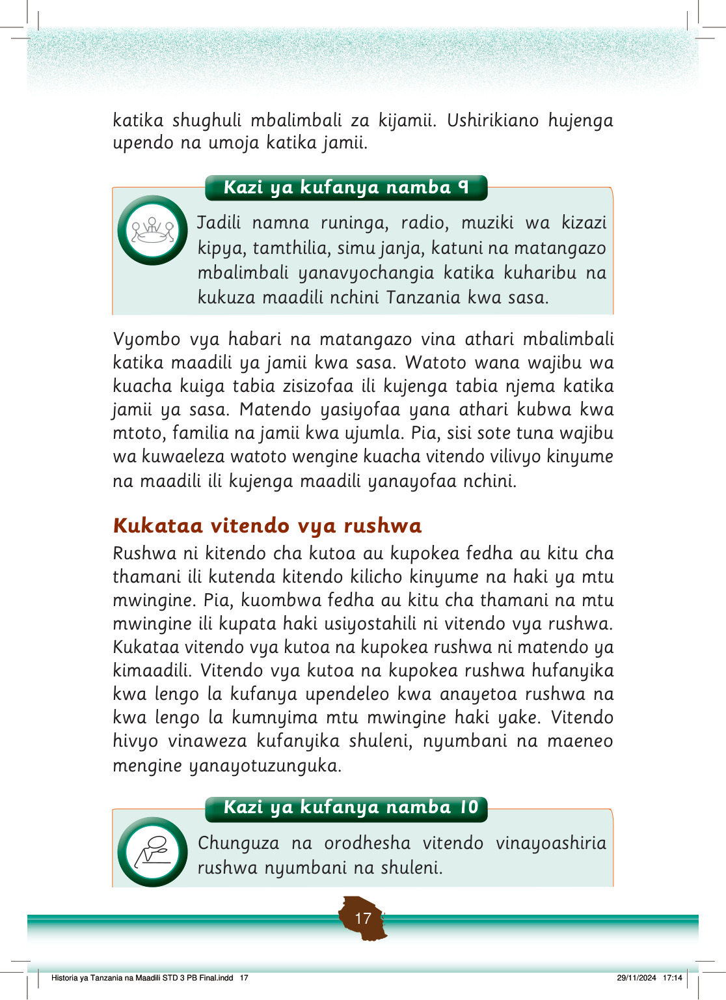

katika shughuli mbalimbali za kijamii.
Ushirikiano hujenga upendo na umoja katika jamii.
Kazi ya kufanya namba 9
Jadili namna runinga, radio, muziki wa kizazi kipya, tamthilia, simu janja, katuni na matangazo mbalimbali yanavyochangia katika kuharibu na kukuza maadili nchini Tanzania kwa sasa.
Vyombo vya habari na matangazo vina athari mbalimbali katika maadili ya jamii kwa sasa.
Watoto wana wajibu wa kuacha kuiga tabia zisizofaa ili kujenga tabia njema katika jamii ya sasa.
Matendo yasiyofaa yana athari kubwa kwa mtoto, familia na jamii kwa ujumla.
Pia, sisi sote tuna wajibu wa kuwaeleza watoto wengine kuacha vitendo vilivyo kinyume na maadili ili kujenga maadili yanayofaa nchini.
Kukataa vitendo vya rushwa
Rushwa ni kitendo cha kutoa au kupokea fedha au kitu cha thamani ili kutenda kitendo kilicho kinyume na haki ya mtu mwingine.
Pia, kuombwa fedha au kitu cha thamani na mtu mwingine ili kupata haki usiyostahili ni vitendo vya rushwa.
Kukataa vitendo vya kutoa na kupokea rushwa ni matendo ya kimaadili.
Vitendo vya kutoa na kupokea rushwa hufanyika kwa lengo la kufanya upendeleo kwa anayetoa rushwa na kwa lengo la kumnyima mtu mwingine haki yake.
Vitendo hivyo vinaweza kufanyika shuleni, nyumbani na maeneo mengine yanayotuzunguka.
Kazi ya kufanya namba 10
Kazi ya kufanya namba 10: Chunguza na orodhesha vitendo vinavyoashiria rushwa nyumbani na shuleni.
Chunguza na orodhesha vitendo vinayoashiria rushwa nyumbani na shuleni.